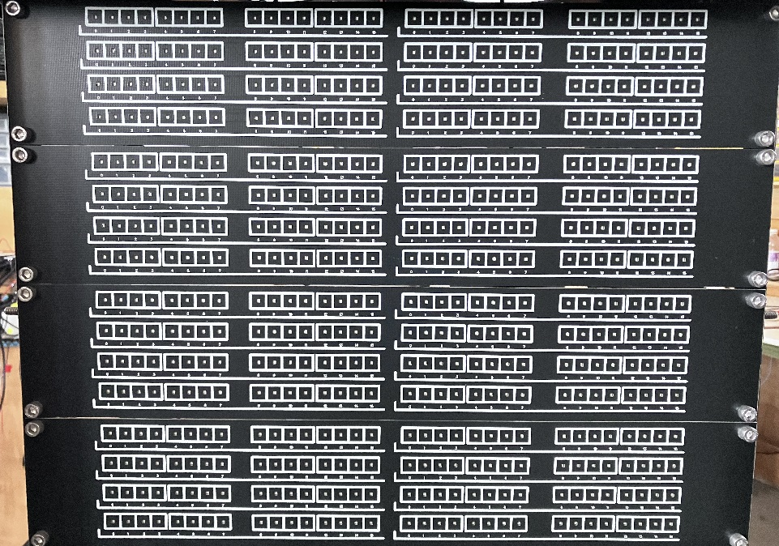
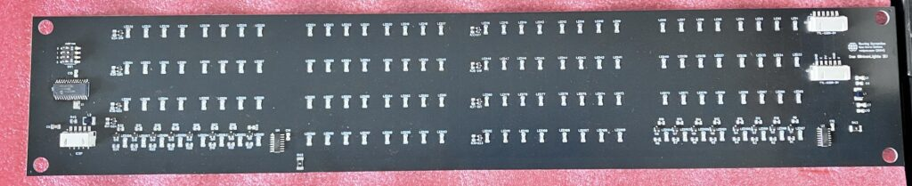
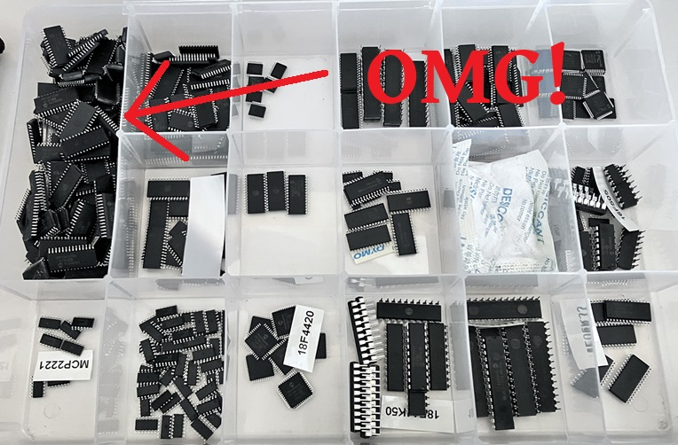
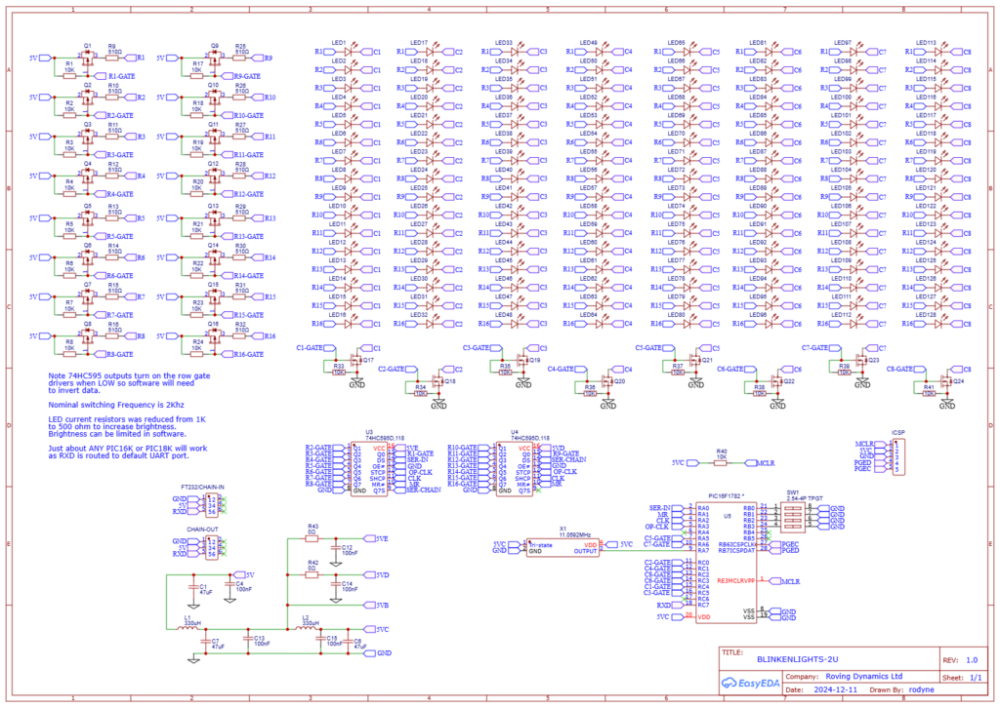

Note there is a RP2040 version of this now available Das Blinkenlights (mit RP2040!)
Probably the only German word I know, and, quite by accident, became the title of my last hobby project, a project to give some bling to my boring local RPI-based rack server without impacting the power budget too much.
Like every project I seem to start in my life these days, I did not start out to do this, the fact is I have been beavering away for years on a retro 16-bit microcomputer, never really making much progress as I progressively get bored of doing it, find something a bit more exciting to do or get distracted by work. Then one-day out of the blue I woke from a dream of why I was actually doing this, and in a word it was nostalgia.
Yes, nostalgia for the long gone days of my working on old mainframe and mini-computers, where I understood the computer literally from their TTL gates upwards, and especially nostalgia for all those flashing lights that made the young me all wobbly at the knees.
So what if I skipped my project forward a few years and made the debug lights first! then I could use them on my NAS server.. Sounds like a good plan Boz, and its summer in NZ so the man-cave is nice and warm!
Looks cool, yet it is just my RPI NAS inside the cabinet, a lot of space and the total power budget is 6.5 watts. (including the RPi4 !)
The thing that has made this possible is that the price of making and assembling a printed circuit over the past few years has plummeted. The 2U panels I made are really just 1.6mm thick black PCB’s with all the components mounted on the back and 128 reverse LEDs shining through the front as per the picture below.

Now you need to remember this is not a metal panel it is a 1.6mm thick fibre-glass one, it does the job, but it wont take much abuse like a metal one will and flexes a little when handling it.

There were a few ways to do this. I thought at first of not using a microprocessor and having 16 74HC595 shift registers for each LED, but then I would have to move the smarts to my raspberry pi or whatever server I am actually using to clock the data in. Also if I didn’t use a micro, the display could not do any blingy stuff. So I looked in my parts bin seeing what crappy microprocessors I could get rid of.

Yes, I remembered now, I had almost 200 really crappy PIC16F1782 chips, left over from an update for one of my clients when he decided to add more functionality to his controller and we had to unsolder a batch of them, and resolder in the “better” PIC16F1783 which had another 256 bytes of RAM. I bet most hobbyist’s have some version of this chip around before the STM32’s, RP2040’s and ESP’s took over the world.
First problem there are not enough GPIO pins on the 28-pin PIC to drive 128 LED’s, plus an address line, plus a serial receive pin, minimum GPIO’s for that is 24 (16×8 LED scan matrix)+4(address)+1(RXD) = 29. A simple solution is to add two 74HC595 shift registers to increase the outputs by 16 at the expense of 4 pins to control them. Also the shift registers are only 9 cents each installed so that is what I did. Of course an even simpler solution would have been to grab the 44-pin PICs from the same box but where’s the fun in that!
Now the first design constraint is I cannot use any through-hole components as the holes will show though to the other side of the board where the silk screen is and spoil the effect. The second design constraint was power, luckily server racks are generally located in dark rooms or inside away from sunlight so no need to pump too many amps though the LED’s. Last design constraint was to be able to actually use the LED’s as real register displays and for that I needed a serial port so I could write real values to the registers, with 4 address switches I can have 16 panels (32U) and display up to 64 x 32-bit words. So when I finally get back to my retro computer it is going to look awesome!
How does it work. Easy! Each board has a connector for 5V, GND and Serial TTL USART data receive. for the video I used an FT232RL adaptor to plug into one of the RPI USB ports, then each board has two of these connectors so I chained another three boards off it each with different addresses set. Without any serial data and after 30 seconds the board will go into a random (ish) pattern using the address setting of the board to make them slightly different. As soon as a serial data message is received the board will display the value received, the format of the message is AxRy=zzzz<CR>
Where Ax = the board address A0, A1, A2.. -> AF (F=15 in hexadecimal)
Ry = Register on the board, there are 8 16-bit registers R0, R1, R2.. -> RF
zzzz is the 16-bit data in hexadecimal.
and <CR> is the ASCII carriage return character (0x0d)
So to set the LED’s on the second panel, first register to 0011 0100 1001 1101 you would send ASCII
A2R0=349D<CR>
The PIC simply stores this and outputs the bits to the shift register and activates the correct scan line. We do this a few thousand times a second so the eye cannot perceive it. There is also a timeout if no serial data is received we just begin some random adding to the registers. The better PICs have good internal oscillators and you can ditch the external crystal if you are happy at 9600 baud
So I got five boards made for a test. All the components were assembled except for the PIC which I left blank so I could add mine, the initial plan was to put them for sale. (as that is what I was looking for and there were none I could find) But then I thought nahh, the cost of 5 panels manufactured and delivered to me in NZ was NZ$215 (US$119) so by the time I soldered on the PIC, uploaded the code and packed them off for shipping, and added a beer for my efforts, they might be NZ$80 each and just too expensive for your average Joe.
Also, based on the non-existent sales figures of my books (which are awesome by-the-way, hint-hint!), you can probably tell that I don’t do marketing very well; So I thought, its XMAS, and the season of goodwill, so put it out for free and maybe somebody else can make a go of it. I did also route out an STM32 version of the PCB with more street appeal but I have enough bling already and did not want to fork out another $2oo nor write another program, but if you have an EasyEDA account the files are 

If you really don’t have a friend who does electronics, and really want me to make a batch for your company’s boring data-centre though just get in touch, ditto if you have any valid questions..
I have published the schematic/PCB and C code at oshwlab you can either use JLPCB to manufacture them yourself or download the CAD files and do it elsewhere. Remember you need to solder your own PIC in or add one to the BOM and get it assembled (I think the cheapest in stock at JLPCB is about $1.50) also you will need a PICKIT or similar to flash the code and an FT232 5V cable if you want to plug it via USB and send data to it. The 5V from the Pi GPIO pin is fine but remember the RPi UART is 3.3V not 5V. I have not tried powering it off 3.3V but it should work (if a bit dimmer).
https://oshwlab.com/rodyne/new-project
All design files are public domain. Do what you will with them. (CAD/Gerber files here if you wish to duplicate or fab somewhere else)
The schematic for those interested is below, but better to use the oshwlab link above and the EasyEDA editor (note my first time using oshwlab so hoping it all works)

Working C Code below for those in the know. Please don’t criticise, it had to fit into 256 bytes of RAM and 2K of ROM (which it easily does) and I have a love/hate relationship with C at the best of times. And yes I know I’m not supposed to call procedures from interrupts, I just noticed that, so feel free to fix if you must and add some better random patterns.
#include <xc.h>
/*
* Rx data is 9600/8/N/1.
* Uses free MPLABX and XC8 compiler. Requires PICKIT cable to program the microcontroller
* If no data received within several seconds then begin random stuff
*/
// Press the help icon left of the MPLABX dashboard and select configuration registers for pragma/config settings
#pragma config FOSC = ECH // Use external 11.0592Mhz OSC
#pragma config PLLEN = OFF // No PLL
#pragma config WDTE = OFF // Watchdog timer OFF if debugging
#pragma config BOREN = OFF // Turn on Brown-out reset
#pragma config BORV = HI // Brown out reset HI
#pragma config STVREN = OFF // Stack Overflow or Underflow will cause a Reset
#pragma config CLKOUTEN = OFF // Clk output pin as GPIO
#define RESET_PIN(state) LATAbits.LATA1 = state // Output - Shift Reg 74HC595 Reset (Active low)
#define LAT_PIN(state) LATAbits.LATA3 = state // Output - Shift Reg 74HC595 output D-Latch clock
#define SERDAT_PIN(state) LATAbits.LATA0 = state // Output - Shift Reg 74HC595 Serial In Data
#define SERCLK_PIN(state) LATAbits.LATA2 = state // Output - Shift Reg 74HC595 Master In Data Clock
#define C1(state) LATCbits.LATC4 = state // Output - Col Driver
#define C2(state) LATCbits.LATC0 = state // Output - Col Driver
#define C3(state) LATCbits.LATC5 = state // Output - Col Driver
#define C4(state) LATCbits.LATC1 = state // Output - Col Driver
#define C5(state) LATAbits.LATA5 = state // Output - Col Driver
#define C6(state) LATCbits.LATC3 = state // Output - Col Driver
#define C7(state) LATAbits.LATA6 = state // Output - Col Driver
#define C8(state) LATCbits.LATC2 = state // Output - Col Driver
// Port B RB0-RB3 used as address control dip switch inputs rest N/U
// Port C7 UART RXD Input
volatile unsigned short LEDRegister[8], mask, res, res2;
volatile unsigned char HostActiveTimeout=0;
volatile unsigned char RxBuffer[21];
volatile unsigned char RxBufPtr=0;
volatile unsigned char RxDataRdy=0;
volatile unsigned char addr=0;
volatile unsigned char i, ColSel, RegisterSelect;
void USdelay(unsigned char a)
{
while(a--) NOP();
}
void ClockData(void)
{
SERCLK_PIN(0);
NOP(); NOP(); NOP(); NOP();
SERCLK_PIN(1);
NOP(); NOP(); NOP(); NOP();
SERCLK_PIN(0);
}
void ClockLatch(void)
{
LAT_PIN(0);
NOP(); NOP(); NOP(); NOP();
LAT_PIN(1);
NOP(); NOP(); NOP(); NOP();
LAT_PIN(0);
}
void __interrupt() TimerAndUartInterrupt()
{
if(PIR1bits.RCIF)
{
if (RCSTAbits.FERR || RCSTAbits.OERR) // reset any errors
{
RCSTAbits.CREN = 0;
RCSTAbits.CREN = 1;
}
//read the byte from receive register into receive buffer
if(RxBufPtr<20)
{
RxBuffer[RxBufPtr++] = RCREG;
if(RCREG==0x0d) RxDataRdy=1; // message received so decode
}
PIR1bits.RCIF=0; // re-enable interrupt for next char
}
if(INTCONbits.T0IF) // clock Selected register into the 74HC595 shift register. ensure takes < 740uS !!!
{
mask=0x8000;
while(mask)
{
res = LEDRegister[RegisterSelect] & mask;
if(res==0) SERDAT_PIN(1); else SERDAT_PIN(0);
ClockData();
mask=mask>>1;
}
ClockLatch();
// enable the correct scan column we are displaying (Selected reg LED's ON) and disable all other cols so other LEDs OFF
if(ColSel==0) C1(1); else C1(0);
if(ColSel==1) C2(1); else C2(0);
if(ColSel==2) C3(1); else C3(0);
if(ColSel==3) C4(1); else C4(0);
if(ColSel==4) C5(1); else C5(0);
if(ColSel==5) C6(1); else C6(0);
if(ColSel==6) C7(1); else C7(0);
if(ColSel==7) C8(1); else C8(0);
ColSel++;
if(ColSel > 7) ColSel=0; // Column select goes 0-7 (Note can make this bigger than 8 to DIM LED brightness)
RegisterSelect++;
if(RegisterSelect > 7) RegisterSelect=0; // Register select goes 0-7 (Keep separate from ColSel in case we want brightness altered)
INTCONbits.T0IF=0;
}
}
unsigned char ascii2dec( unsigned char data) // expecting a hexedecimal num 0..F anything else returns 0
{
if(data=='0') return 0;
if(data=='1') return 1;
if(data=='2') return 2;
if(data=='3') return 3;
if(data=='4') return 4;
if(data=='5') return 5;
if(data=='6') return 6;
if(data=='7') return 7;
if(data=='8') return 8;
if(data=='9') return 9;
if(data=='A') return 10;
if(data=='B') return 11;
if(data=='C') return 12;
if(data=='D') return 13;
if(data=='E') return 14;
if(data=='F') return 15;
if(data=='a') return 10;
if(data=='b') return 11;
if(data=='c') return 12;
if(data=='d') return 13;
if(data=='e') return 14;
if(data=='f') return 15;
return 0; // default/error
}
int main()
{
TRISA = 0x00; // PortA: All Output
ANSELA = 0x00;
LATA = 0x00;
TRISB = 0x0f; // PortB: RB0-Rb3 input / rest output
ANSELB = 0x00;
LATB = 0x00;
WPUB = 0x0f; // pull up address bits pulled down if sw set
TRISC = 0x80; // PortC: All output except RC7 for RXD
LATC = 0x00;
addr = (~PORTB) & 0x0f; // dip switch returns 0-15 (HAVE PULL UP SO ON=0)
RxDataRdy = 0;
RegisterSelect = 0;
ColSel = 0;
HostActiveTimeout = 0;
for(i=0; i<8; i++) LEDRegister[i] = 0XC0F3>>addr;
for(i=0; i<20; i++) RxBuffer[i]=0;
RESET_PIN(1); // remove 74HC595D reset to allow data shifting
ClockLatch();
USdelay(200);
// configure serial UART (connected to USB) 9600 baud 8/N/1 (Calculations based on OSC=11.0952Mhz P325 datasheet)
TXSTAbits.BRGH = 0;
TXSTAbits.SYNC= 0; // Async
BAUDCONbits.BRG16 = 0;
SPBRG = 17;
RC1STAbits.SPEN=1; // Enable Serial
TXSTAbits.TXEN= 0; // TX DISABLED
RCSTAbits.CREN= 1; // RX ENABLED
PIE1bits.RCIE = 1; // enable receive interrupt
INTCONbits.PEIE=1; // enable interrupts for UART
// configure timer 0 interrupt: tick = Fosc (11.0592Mhz) /4/8/256 = approx every 740uS
OPTION_REG = 0x02;
INTCONbits.T0IE=1;
// configure timer 1 (as a 16 bit counter, tick = Fosc/4/8 = 2.88uS
T1CON = 0x31;
T1GCON = 0;
TMR1L = 0;
TMR1H = addr*16; // so multiple panels change at different times if all powered up together
INTCONbits.GIE =1; // enable interrupts
while(1)
{
CLRWDT();
if(TMR1H>250) // approx every 188mS update the serial data timeout and if no data received after 5 seconds then give a rand pattern
{
TMR1H=0;
if(HostActiveTimeout<250)
HostActiveTimeout++;
else
{
// no data coming in so do something interesting
for(i=0;i<8;i++)
LEDRegister[i]=LEDRegister[i]+TMR0+addr+i;
}
}
if(RxDataRdy) // RXD decode 9 char message received through serial and set regLED[n] (expecting format AnRn=0000) Where A=Panel Address, R=Register and n = 0..F eg "A0R4=1234"
{
if(RxBuffer[0]=='A' && ascii2dec(RxBuffer[1])==addr && RxBuffer[2]=='R' && RxBuffer[4]=='=') // format still good
{
i=ascii2dec(RxBuffer[3])-addr; // decode the reg number ASCII to dec
if (i>=0 && i<8)
{
res2 = (ascii2dec(RxBuffer[5])*4096) + (ascii2dec(RxBuffer[6])*256) + (ascii2dec(RxBuffer[7])*16) + ascii2dec(RxBuffer[8]);
LEDRegister[i]=res2;
}
HostActiveTimeout=0; // valid message, reset timeout
}
RxDataRdy=0;
RxBufPtr=0;
}
}
}